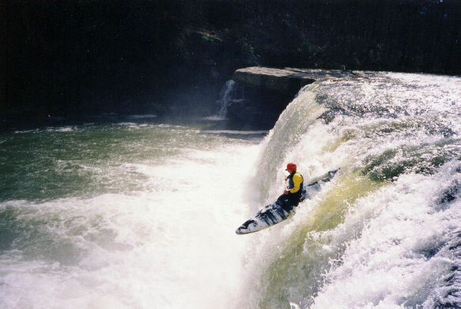
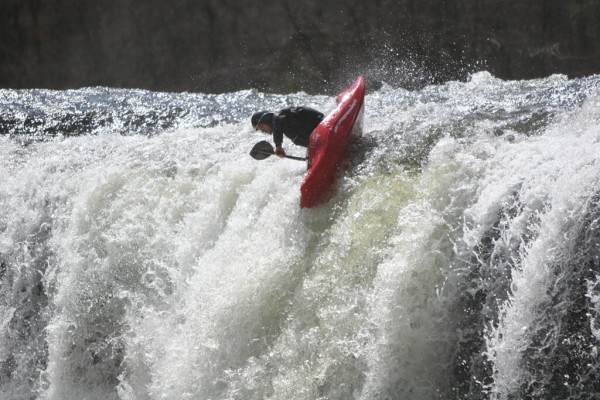
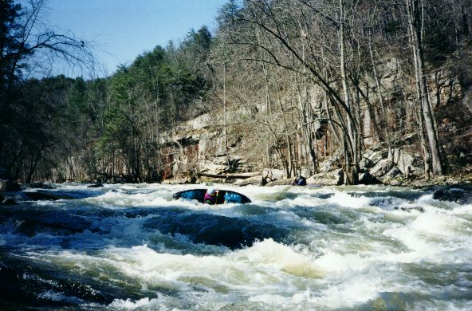
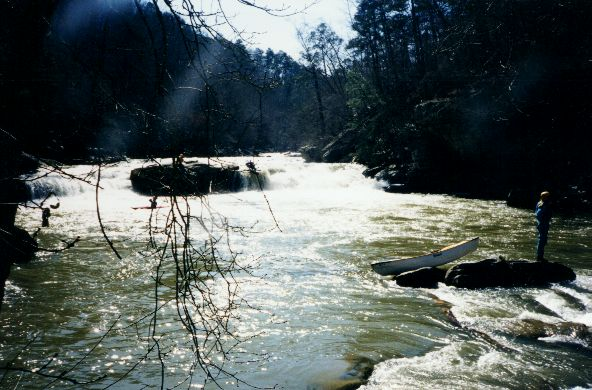
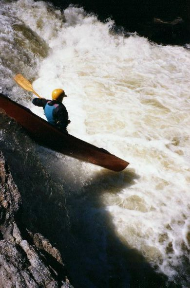
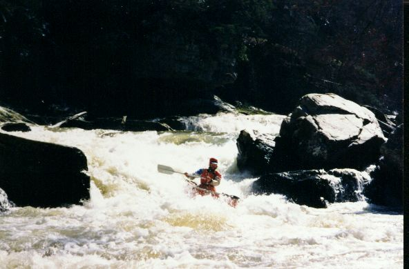
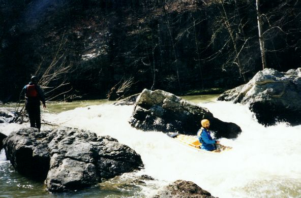
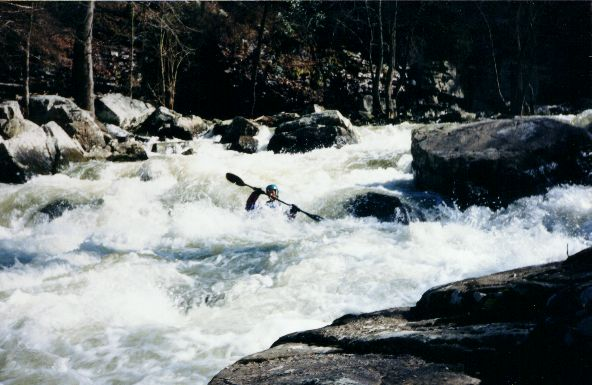

photo by David Haynes

Short Creek
|  | Yeah, this is a cool shot of yours truly on Short Creek Falls. The falls is right below the bridge which serves as the alternate lower put-in. |
|  | Jeremy Adkins demonstrating the principle that
there are multiple ways to run a waterfall. Hucking it at the inaugural 2005 North Alabama Whitewater Festival photo by David Haynes |
|
Dave Branham demonstrates his highly evolved high brace / barrel roll technique at the falls. |
|  | One of the initial eddy hop type rapids towards the top. |
|  | A view of Grotto Falls from river right next to Tornado Sluice. The open boater is running the conventional center line next to the scouting island. This can be a scapy line below 12", but it is fine with speed. You may break your nose if you don't have enough speed. River right is too bony. River Left is run but watch for the nasty hole and the undercut on shore. Mike is scouting Tornado Sluice at a convenient spot. |
|  | John Reynolds touches down while paddling glass over Grotto falls. |
|  | Tornado Sluice. Generally a straight shot. The eddy on river left can spin you for some time if you get in there outside your boat. (Mike Abernathy Photo) |
|  | Divided Highway on the conventional right line. Left is runnable but boof to avoid a vertical pin. |
|  | John Parker nears the bottom of Rock Cruncher. (14") |